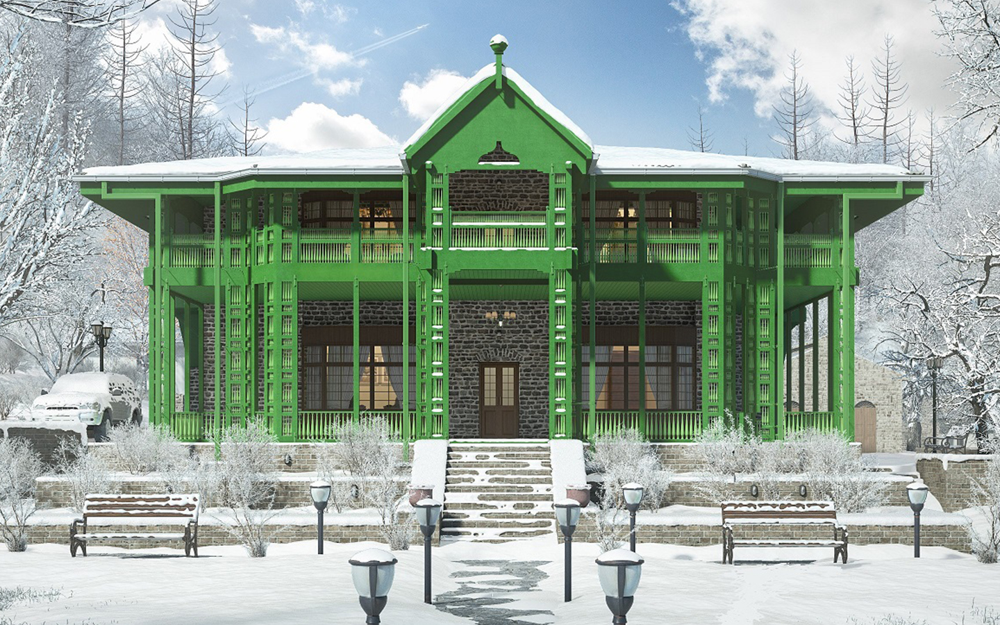
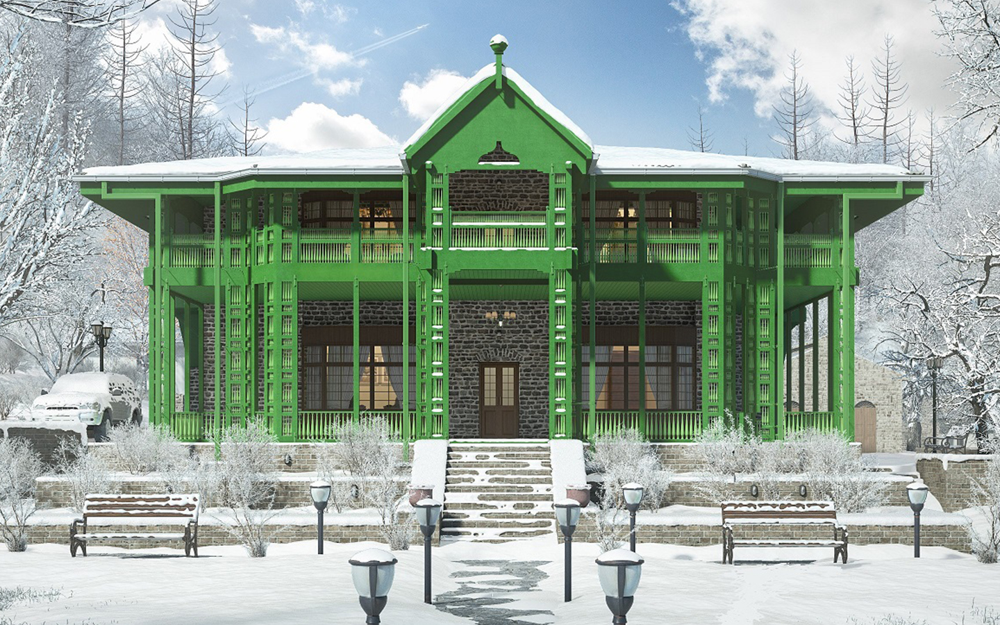
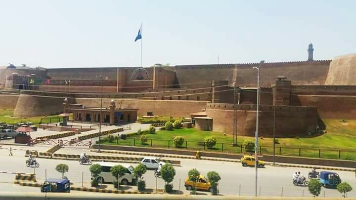
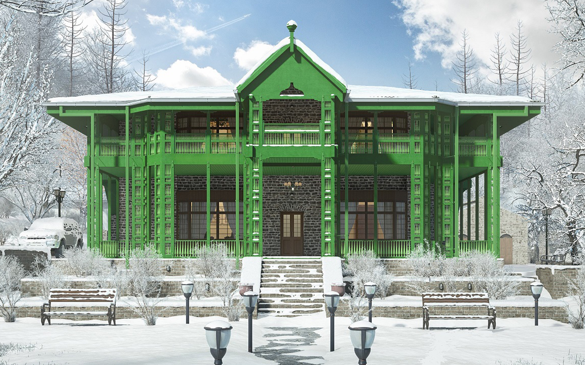
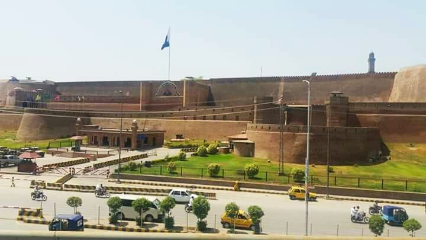
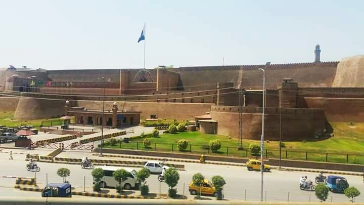
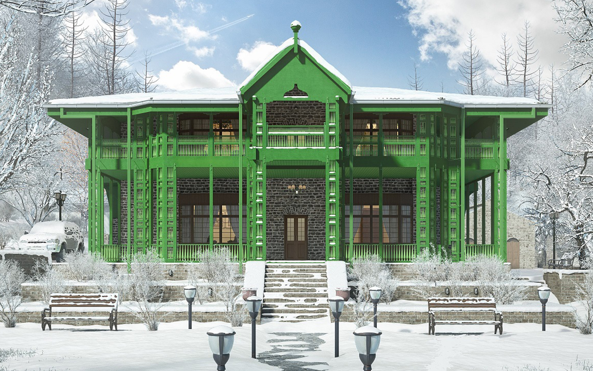
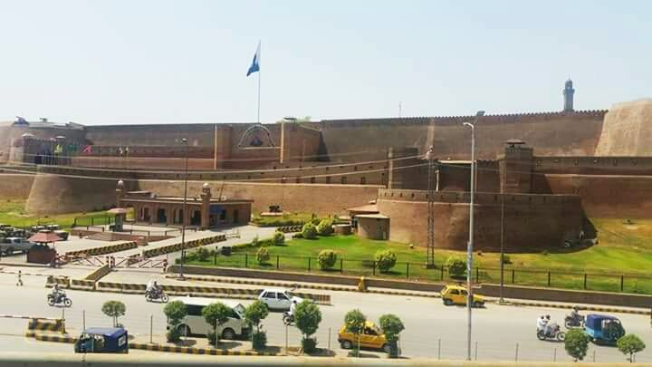

 





Discover the rich history, diverse culture, breathtaking landscapes, and vibrant traditions of Pakistan. Whether you're seeking spiritual serenity, thrilling adventures, or cultural immersion—Pakistan has it all.
Pakistan is home to a rich tapestry of traditions, vibrant festivals, spiritual customs, and a wide array of languages and cuisines. From the colorful Basant celebrations to the rhythmic beats of Bhangra and the grace of Kathak and classical poetry, every region of Pakistan shares a unique story rooted in its deep cultural heritage.